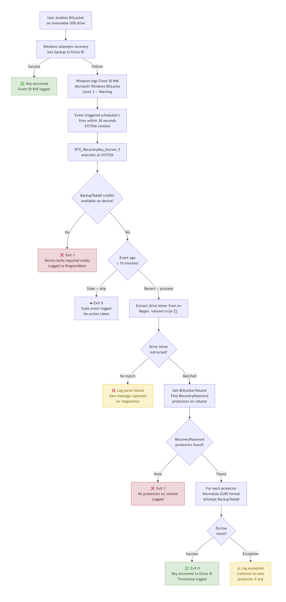

| Version | 1.0 |
| Author | Shirish Mistry |
| Associate Principal — Endpoint & Security Architecture | |
| Date | June 2026 |
| Repository | github.com/Shirish03/windows-endpoint-security-patterns |
Windows BitLocker-to-Go encrypts removable USB drives and is designed to automatically back up recovery keys to Entra ID, ensuring administrators can recover data if a drive is lost or a user forgets their password. On devices that are Hybrid Entra ID joined and managed through Intune, this backup step silently fails. No alert is raised, no user is notified, and the device reports as compliant — but the recovery key was never stored.
The result is a fleet of encrypted removable drives with no administrative recovery path. When a drive fails or a key is needed, the data is permanently lost.
The recommended approach is an event-driven compensating control that detects the platform’s own failure signal and performs an automatic retry using only native Windows components. No new infrastructure is required. The control is auditable, scalable, and operates entirely within the platform’s existing security boundaries.
Modern enterprise Windows estates are rarely fully cloud-native or fully on-premises. The most common transitional state is Hybrid Entra ID join: devices are joined to on-premises Active Directory, registered in Microsoft Entra ID, and managed through a combination of Group Policy and Microsoft Intune. This configuration unlocks cloud management capabilities — conditional access, Intune policy delivery, Autopilot provisioning — without requiring a full migration away from on-premises directory infrastructure.
BitLocker-to-Go — the variant of BitLocker that encrypts removable USB drives rather than OS volumes — is expected to behave consistently with OS drive BitLocker in this configuration. Group Policy and Intune CSP settings exist to require recovery key backup to Entra ID. They deploy without error. They appear in compliance reports. And on Hybrid Entra ID joined devices, they do not produce the result they appear to produce: the recovery key backup for removable drives silently fails at the platform level.
This is not a misconfiguration. The policy is correctly applied. The failure occurs in the Windows BitLocker API’s handling of the cloud backup operation when the device identity context of a Hybrid Entra ID joined device is involved. The result is a gap that is invisible to standard configuration management tooling.
Hybrid Entra ID join is the dominant configuration in enterprise Windows estates undergoing cloud modernisation. Organisations that have not yet completed a full Entra ID-only migration — which describes the majority of mid-to-large enterprises at any given point in that journey — are operating devices in this configuration. Any of those devices on which a user encrypts a removable USB drive is subject to this failure.
The scale of the affected population is proportional to the scale of the Hybrid Entra ID estate and the rate at which users encrypt removable media. In environments where removable drive encryption is policy-required or common practice, the number of drives without escrowed recovery keys can accumulate silently across the fleet.
Microsoft’s documentation for BitLocker and Intune policy correctly describes the configuration required to enable recovery key backup to Entra ID. It does not document this specific failure mode for Hybrid Entra ID joined devices with removable drives. The absence of documentation creates a false confidence: an administrator who has correctly followed the documented configuration steps has no reason to suspect the control is not functioning.
Windows generates Event ID 846 in the
Microsoft-Windows-BitLocker-API/Management log when
recovery key backup fails. This event is classified as Level 3 —
Warning, not Error. Standard Windows event monitoring configurations
typically alert on Error-level events and treat Warning-level events as
informational. Event ID 846 does not appear in Intune compliance
reports, is not surfaced in the Intune admin center as a device health
signal, and does not trigger any native administrative notification.
The combination of a warning-level event, no platform alert, and correct policy compliance reporting means this failure can persist indefinitely without detection.
Recovery key escrow is not an administrative convenience — it is the mechanism that makes encrypted data recoverable. When escrow silently fails, the organisation holds encrypted removable drives with no administrative path to recovery. A single hardware failure, forgotten password, or staff departure involving an unescrowable drive results in permanent data loss. The risk is proportional to the sensitivity of data users place on removable media and the scale of the affected device population.
The Group Policy and Intune configurations that require recovery key backup to Entra ID may be correctly deployed and will appear compliant during a policy review. The failure is behavioural, not configurational. An assessor validating the control end-to-end — by checking whether recovery keys are actually present in Entra ID for enrolled devices — would find the keys absent. The control is configured but not functioning. This is a more significant finding than a missing policy, because it demonstrates a gap between documented controls and effective controls.
In regulated environments where data protection controls are subject to audit, the inability to demonstrate that recovery keys are held for encrypted removable drives represents an audit finding against the effectiveness of the encryption control. The fact that policy is correctly configured does not satisfy an assessor looking for evidence that the control functions in practice.
Organisations subject to data protection regulation, sector-specific security standards, or internal audit requirements around encryption key management should treat this gap as a control effectiveness failure rather than a configuration item.
Several widely adopted frameworks treat recovery key management as a component of cryptographic control assurance:
Silent escrow failure creates a gap that is relevant across all of these. This document does not constitute legal or compliance advice; organisations should assess applicability to their specific obligations.
The solution treats Windows Event ID 846 — the platform’s own recovery key backup failure signal — as a deterministic trigger for an automated retry. When BitLocker-to-Go fails to back up a recovery key, Windows logs this event. An event-triggered scheduled task detects it within 30 seconds and invokes a PowerShell script that retries the escrow operation using native BitLocker APIs.
The entire mechanism operates within components and trust relationships already present on the endpoint. No new infrastructure is introduced, no credentials are handled by the solution, and no background agents are required.

Color guide: green nodes = success paths, red = terminal failures, amber = logged errors with continuation.
Event ID 846 — the trigger Windows emits this event
when BitLocker-to-Go fails to back up a recovery key to Entra ID. The
event includes the affected drive letter and is logged to the
Microsoft-Windows-BitLocker-API/Management channel. The
compensating control treats this event as a precise, reliable signal
rather than noise to suppress.
Event-triggered scheduled task A scheduled task registered on the endpoint fires within 30 seconds of Event ID 846. It executes under the SYSTEM context, ensuring consistent behaviour regardless of the user session state, and invokes the PowerShell escrow script. The task performs no logic itself — it is a native dispatcher.
PowerShell escrow script The script parses the
triggering event, extracts the affected drive letter, identifies
RecoveryPassword key protectors on the volume, and retries the Entra ID
backup using the BackupToAAD-BitLockerKeyProtector cmdlet.
Every execution step — success or failure — is logged with timestamp and
context. No recovery key material is written to any log.
Entra ID The device’s existing trust relationship with Entra ID is used for the escrow operation. The script does not handle credentials or tenant identifiers. If the retry succeeds, the recovery key is visible in the Entra ID portal under the device record.
For full implementation detail — deployment steps, scheduled task configuration, script parameters, and validation — refer to the GitHub pattern.
A polling approach would require periodically enumerating all BitLocker-protected volumes across the device estate and determining which recovery keys are absent from Entra ID. This creates a detection lag proportional to the polling interval, requires persistent background activity on every endpoint, and introduces complexity in distinguishing between keys that were never escrowed and those that were escrowed before the polling window.
The event-driven approach has none of these properties. It executes only when a failure is detected, responds within 30 seconds, and has zero overhead on devices that are not experiencing escrow failures. The platform already emits a reliable failure signal — the design choice is whether to act on it.
The solution does not replace or modify the native BitLocker escrow mechanism. It operates as a compensating control — a secondary measure that detects and responds to native mechanism failures. This means the native mechanism remains in place and may succeed on its own in some scenarios; the compensating control only activates when it does not.
This design is deliberately conservative. A compensating control that works within the platform’s existing boundaries is easier to audit, easier to explain to a security assessor, and less likely to introduce new failure modes.
Intune Remediations were evaluated as an alternative delivery mechanism. Remediations run on a configurable schedule (minimum 15 minutes) and require cloud connectivity at execution time. The 15-minute minimum latency and schedule-based execution make them unsuitable as a response to a real-time failure signal. The event-driven approach responds within 30 seconds and executes locally.
Repeated retry loops were considered and rejected. A single retry per triggering event is sufficient: if the retry fails, the failure is logged with full context, and the next Event ID 846 — triggered if the user re-enables BitLocker — will initiate a fresh attempt. Repeated retries introduce log flooding risk and unpredictable behaviour under load.
Agent-based solutions that introduce new software or persistent background processes were not considered within scope. The requirement to operate within the platform’s existing boundaries ruled them out.
Full operational guidance — monitoring, failure detection, log locations, and lifecycle considerations — is documented in the Operational Guidance section of the GitHub pattern.
In production, the primary signals to monitor are:
0x0 in Task SchedulerC:\ProgramData\BitLocker\Logs\BTG_RecoveryKey_Escrow_Retry.log
— records each execution with timestamp, drive letter, and outcomeThe solution requires no certificate renewal, no ongoing credential management, and no persistent background process. The scheduled task persists in the local task store across Intune re-enrollment. If the device is re-imaged, the installer must be re-deployed as part of the build process.
Organisations operating Windows devices in Hybrid Entra ID joined, Intune-managed configurations should deploy this compensating control to all endpoints where BitLocker-to-Go is enabled or where users may encrypt removable USB drives. The control closes a silent, verified platform gap that cannot be addressed through policy configuration alone. Deployment requires no new infrastructure, introduces no new credentials or agents, and is reversible. The operational overhead is low: the solution logs its own activity, integrates with existing event monitoring, and requires no ongoing maintenance beyond re-deployment at device re-image. Given the risk of permanent data loss from unrecoverable encrypted drives, and the audit exposure in environments where encryption key management is a documented control, deployment should be treated as a baseline security measure rather than an optional enhancement.
GitHub pattern — full implementation reference The complete implementation — deployment scripts, scheduled task XML, validation steps, and operational guidance — is available at: github.com/Shirish03/windows-endpoint-security-patterns/tree/main/patterns/hybrid-entra-btg-key-escrow-pattern
Microsoft documentation
Reference Microsoft documentation at learn.microsoft.com. Content and URLs are subject to change; search by topic rather than direct URL.
This whitepaper is provided as reference material and architectural guidance. The compensating control described has been validated in specific Hybrid Entra ID and Intune-managed environment configurations and may require adaptation for other configurations.
There is no guarantee that this approach will function identically in all environments. Administrators should review, test, and validate behaviour in a controlled setting before any production use.
This document does not constitute legal or compliance advice. Framework references (NIST CSF, ISO/IEC 27001) are provided for context only. Organisations should assess applicability to their specific regulatory and contractual obligations independently.
Use at your own discretion.